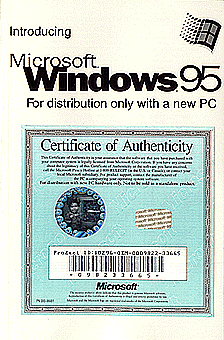
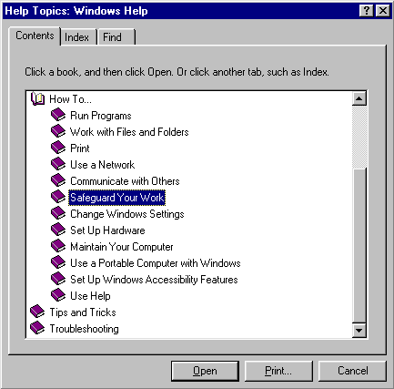

 |
Dobrodošli u novi operativni sistem,
sada æete posao moæi da obavite lakše i efikasnije.
Ovo uputstvo bi trebalo da Vam pomogne oko najèešæih
"koraka" koje æete èiniti u toku obavljanja
posla i da Vam ukaže na nove moguænosti Windows95
operativnog sistema. Prva verzija Windows95 pompezno je izašla 25.08.1995. i ima oznaku 4.00.950
|
| OEM verzija Windows 95 |
Kako da pronaðete informaciju kada Vam je potrebna.
 |
Pomoæ u proceduriOsnovni izvor informacija u Windows95 je HELP funkcija koja se poziva pritiskom na taster F1. Pomoæ za najèešæe "korake" ponuðena Vam je veæ u osnovnom ekranu Helpa. Za veæi izbor ili pretraživanje, potrebno je bazu dodatno indeksirati. Sadržaj Help-a uraðen je kompletno na engleskom jeziku. |
 Kompletnu
prezentaciju Windows95 operativnog sistema možete pronaæi na Microsoft sajtu na Internetu.
Kompletnu
prezentaciju Windows95 operativnog sistema možete pronaæi na Microsoft sajtu na Internetu.
Kompletno OEM uputstvo za Windows95 dobijate kada kupite kompjuter.